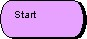
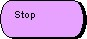
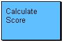
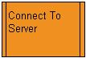
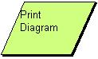
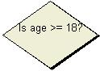
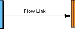
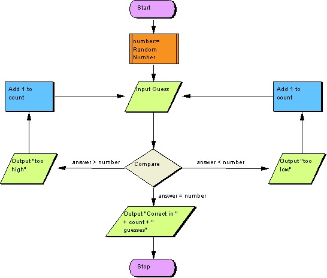

|
|
Program Flow Chart
The program flow chart tool allows users to graphically model
algorithms using the traditional flow-chart approach. A standard set of
node types are provided to support elements such as
processes, pre-defined processes,
I/O nodes and decision
nodes. These diagrams are very useful for visualizing algorithms
prior to their implementation in program code, but are often also very
useful for defining activities within other contexts, e.g. the
procedures that a company must follow when they employ new staff. A
model check facility allows input models to be checked for syntactical
correctness.
To view the main multi-CASE help page click
here
|
|
|
|

Start Node
Definition: The start node is used to model the logical start point
within a program flow chart. Only a single start node exists and it may only
have outgoing flows.
Representation: Start nodes are represented by a purple oval with a
contained textual "Start" label.


Creation: The start node is created automatically when a new diagram
is created.
Rules: The start node may only have one outgoing flow and no incoming
flows. A start node may not be directly attached to a stop node.
Operations: Move Forwards/Backwards, Bring to Front, Send to Back,
Delete, Add Flow Link, Add Subsequent Process/Pre-Defined Process/IO
Node/Decision Node, Change Start/Text Color and Edit Start Annotation.
Stop Node
Definition: The stop node is used to model the logical end point of
the program flow chart. A stop node has no outgoing flows.
Representation: Stop nodes are represented by a purple oval with a
contained textual "Stop" label.

Creation: A stop node is added by right clicking on a flow chart model
diagram editor or an existing model element and selecting the "Add (subsequent)
Stop Node" option from the menu. Position the node outline where you wish it to
be placed on the diagram and left click.
Rules: A stop node may not be directly attached to a start node. A
stop node may not have any outgoing flows.
Operations: Move Forwards/Backwards, Bring to Front, Send to Back,
Delete, Change Stop/Text Color and Edit Stop Annotation.
Process
Definition: A process is used to model an action or activity to be
performed within the algorithm being modeled. Ideally a process represents a
fairly primitive type action, since the model as a whole typically represents a
higher level activity.
Representation: Processes are represented by a blue rectangular shaped
node with a contained textual name to represent the process to be performed.
e.g.

Creation: A process is added by right clicking on a flow chart model
diagram editor or an existing model element and selecting the "Add (subsequent)
Process" option from the menu. Position the process outline where you wish it to
be placed on the diagram and left click, enter the name when prompted and click
"OK".
Rules: Processes should have at least one incoming flow and exactly
one outgoing flow.
Operations: Move Forwards/Backwards, Bring to Front, Send to Back,
Delete, Add Flow Link, Add Subsequent Process/Pre-Defined Process/IO
Node/Decision Node/Stop Node, Change Process/Text Color and Edit Process
Annotation/Action.
PreDefined Process
Definition: A predefined process is used to model an action or
activity that is available for use but is not specified by the system. i.e. it
is predefined within the target environment.
Representation: Predefined processes are represented by an orange
rectangular shaped node that has a double line border down each side. A
contained textual name represents the process to be performed. e.g.

Creation: A predefined process is added by right clicking on a flow
chart model diagram editor or an existing model element and selecting the "Add
(subsequent) PreDefined Process" option from the menu. Position the process
outline where you wish it to be placed on the diagram and left click, enter the
name when prompted and click "OK".
Rules: PreDefined Processes should have at least one incoming flow and
exactly one outgoing flow.
Operations: Move Forwards/Backwards, Bring to Front, Send to Back,
Delete, Add Flow Link, Add Subsequent Process/Pre-Defined Process/IO
Node/Decision Node/Stop Node, Change Process/Text Color and Edit Process
Annotation/Action.
I/O Node
Definition: An I/O (input/output) node is used to model an action
concerned with the input and/or output of data. An I/O node is typically used
when data needs to be accessed via some external device. e.g. input some text
from a keyboard.
Representation: I/O nodes are represented by a green parallelogram
with a contained textual name that represents the input/output to be performed.
e.g.

Creation: An I/O Node is added by right clicking on a flow chart model
diagram editor or an existing model element and selecting the "Add (subsequent)
I/O Node" option from the menu. Position the node outline where you wish it to
be placed on the diagram and left click, enter the name when prompted and click
"OK".
Rules: An I/O node should have at least one incoming flow and exactly
one outgoing flow.
Operations: Move Forwards/Backwards, Bring to Front, Send to Back,
Delete, Add Flow Link, Add Subsequent Process/Pre-Defined Process/IO
Node/Decision Node/Stop Node, Change I/O Color/Text Color and Edit I/O
Annotation/Name.
Decision Box
Definition: A decision box is used to model a decision point within an
algorithm. A comparison operation is typically attached to each outgoing flow,
which may be evaluated to determine the path to be taken. These comparison
operations can be stand-alone or based on a specific expression/action shown
within the decision box.
Representation: Decision boxes are represented by cream diamonds that
optionally contain a name label. The name label can be used to represent a
comparison expression if required.

Creation: A Decision Box is added by right clicking on a flow chart
model diagram editor or an existing model element and selecting the "Add
(subsequent) Decision Box" option from the menu. Position the box outline where
you wish it to be placed on the diagram and left click.
Rules: A decision box should have at least one incoming flow and at
least two outgoing flows. The expressions attached to the outgoing flows should
be such that only one possible path may be followed at any one time, i.e. they
should be mutually exclusive.
Operations: Move Forwards/Backwards, Bring to Front, Send to Back,
Delete, Add Flow Link, Add Subsequent Process/Pre-Defined Process/IO
Node/Decision Node/Stop Node, Change Box Color/Text Color and Edit Decision
Annotation/Expression.
Flow Link
Definition: A flow link is used to model the sequence in which each
process/decision is carried out. A flow link has a source and a destination
node, identifiable by an arrow placed on the destination end. The
start node is used to identify the absolute beginning of a
flow chart.
Representation: Flow links are represented by solid links with an
arrow on the destination side. They may have an optional name label attached to
them, which can be used to describe any comparison operations etc.

Creation: A flow link is created automatically when a node is added as
a subsequent node (by right clicking on a specific element). They can also be
added manually by right clicking on the node which is to be the source of the
flow and selecting "Add Flow Link" from the menu. Position the other end of the
flow outline on the node that is to be destination of the flow and left click.
Rules: Flows cannot have a stop node as their source, or a start node
as their destination.
Operations: Move Forwards/Backwards, Bring to Front, Send to Back,
Delete, Add/Remove Link Point, Change Flow Color, Edit Flow Annotation,/Label.
Example
Below is an example of a program flow chart:
